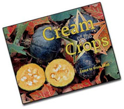
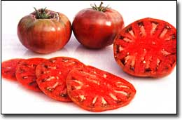

Great taste is one of the biggest reasons to grow your own garden, yet many of the best-tasting varieties are becoming hard to find. M OTHER'S Cream of the Crops series presents outstanding varieties recommended by our readers.
Left: 'Buttercup' squash is easy to grow and sweet to the taste, with spicy, buttery undertones.
Buttercup Squash
An older variety of winter squash that is prolific and easy to grow, `Buttercup' fruits are turban-shaped with gray stripes. When ripe, the skin turns emerald-green. The semidry pulp is a deep orange that turns vivid orange-yellow when baked or steamed. Very sweet and delicate in flavor with spicy, buttery undertones, `Buttercup' melts in your mouth, slightly reminiscent of a good sweet potato. Delicious when served with butter and brown sugar, or sprinkled with cinnamon and nutmeg, it is a gourmet delight.
`Buttercup' vines are rampant, growing from 6 to 12 feet long, and several squash, which will vary in size from 1 to 5 pounds, will set on each one. `Buttercup' has good keeping qualities, but doesn't keep as well as `Butternut' or `Blue Hubbard.'
An old-time New England variety, `Buttercup' does especially well in cool northern summers, and is good tasting even when slightly under-ripe. Thus, it's a good choice for any short-season climate. As a squash grower for almost 30 years, I consider `Buttercup' the best-tasting winter squash.
A source is Heirloom Seeds [P.O. Box 245, W. Elizabeth, PA 15088, www.heirloomseeds.com; (412) 384-0852].
STEVE FORD
Casper, Wyoming
Cherokee Purple Tomato
I grow a lot of different tomato varieties every year, and `Cherokee Purple' always is sure to be one of them. The color and flavor of this heirloom variety make it a standout.
I would describe the color, which has been variously called purple, mahogany and muddy red, as dark pink with darker shoulders that are purplish.
'Cherokee Purple' consistently yields fruit that is complex, full-flavored and meaty, with a sweet aftertaste and no strong acidic flavor. It has just the right amount of moisture for great tomato sandwiches - not too dry and not so wet as to make the bread soggy.
Reportedly, seeds for this tomato were sent to North Carolina seed saver Craig LeHoullier "out of the blue" by J.D. Green of Tennessee, who claimed his neighbor's family got them from Cherokee Indians who had grown them for 100 years. LeHoullier called them `Cherokee Purple.'
Seed is readily available from numerous commercial sources, including a company I helped found, Victory Seed Company [P.O. Box 192; Molalla, OR 97038; www.victoryseeds.com; (503) 829-31261.
MIKE DUNTON
Molalla, Oregon
Jimenez Bean
Although listed as a snap bean, 'Jimenez' is the best all-purpose bean I've grown. It has thick, fleshy Romano-style pods with carmine streaks that fade upon cooking. Long and broad, the pods stand well without going fibrous, even when overgrown.
The variety is so productive you have to let many go by the by (who can keep up?), but no matter - they make a very plump and creamy shell bean, and, ultimately, an excellent dry bean, too.
'Jimenez' resembles a fat pinto bean with a slightly bluish blush. The texture is rich, thick and meaty, with a hearty flavor especially compatible with tomatoes, rocambole, basil, savory and zucchini. Jimenez' is not the best for dilly bean pickles, though - the skinny little pencil-pod types are best for those.
Marianne Jones of Marianna's Heirloom Seeds loves Jimenez,' too. She says the pods are curly when young, but straighten out as they grow. And the variety is long-lasting, producing pods a good two months after the heat gets other pole beans.
She describes them as having bright cranberry mottling that sometimes covers most of the bean. Seed Savers Exchange, however, describes the coloration as a "purple-red tinting and streaking over dark green."
Despite the universal acclaim from anyone who's tried them, Jimenez' seed is rare and hard to find. Currently, Sand Hill Preservation Center [1878 230th St.; Calamus, IA 52729; www.sandhillpreservation.com; (563) 246-2299] is the only commercial source.
WILL BONSALL
Industry, Maine
Squash and Black Bean Chili
2 tablespoons olive oil
2 onions, diced
1 clove garlic, minced
2 red bell peppers, diced
2 teaspoons chili powder
1 teaspoon ground cumin
1/2 teaspoon cinnamon
1/2 teaspoon ground cloves
1/2 cup dry red wine
2 cups tomatoes, chopped (reserve juice)
2 cups `Buttercup' or `Butternut' squash, pared and diced
2 cups cooked black beans
2 tablespoons fresh cilantro, chopped
2 tablespoons fat-leaf parsley
Heat olive oil over medium heat in large, heavy pot. Add onions, garlic and peppers. Cook for 10 minutes until vegetables have wilted. Add the spices; cook 1 minute, stirring to coat vegetables well. Add chopped tomatoes with their juices, red wine and squash. Bring to boil, reduce heat and simmer, uncovered, about 20 minutes or until squash is tender. Add cooked beans. Cook 10 minutes more. Before serving, garnish with cilantro and parsley.
Mother Earth News
|
 Cherokee Purple' tomatoes are perfect for sandwiches. |
 |
|